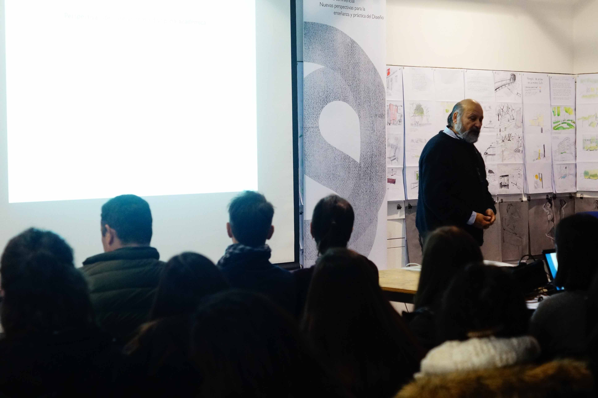
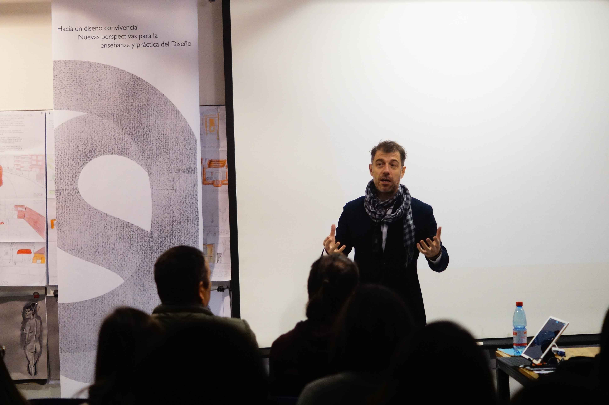

Organización
Además de los proyectos de diseño en los que he trabajado y participado, también me he involucrado de forma activa en la gestión y desarrollo de actividades tanto voluntarias como académicas.
Misiones e[ad]
Las Misiones e[ad] es básicamente una actividad universitaria gestionada por y para alumnos de la misma escuela, en la cual se viaja y permanece en una localidad un tanto alejada de las urbes con el fin de visitar, conversar y conocer gente que se encuentran un poco aisladas debido al mismo alejamiento de las ciudades. Para poder llevar a cabo estas misiones es que existe el grupo organizador, el cual trabaja durante todo el año juntando fondos, redactando material, preparar el lugar a visitar, difundiendo la actividad y varias tareas más.
- 
- 
-

Seminario de Diseño 2017
El Seminario es una instancia formativa preparada por los alumnos que ingresan a su primer periodo de titulación. Para esta actividad, los organizadores nos pusimos de acuerdo con el tema para luego buscar exponentes dentro del área del diseño que esté acorde a la temática a tratar. La realización de este seminario conlleva la recaudación de fondo, la preparación del cronograma, el diseño de imagen, papelería y el brindis final. Para esta versión, el nombre del Seminario fue: “Hacia un diseño convivencial: nuevas perspectivas y enseñanzas para la práctica del diseño” y los expositores invitados fueron Rodrigo Alonso, Diseñador Gráfico y Marcelo Quezada, Diseñador Industrial..